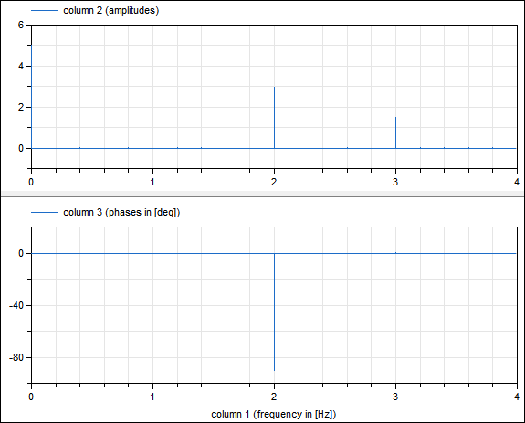

Library of functions for the Fast Fourier Transform (FFT)
This package provides functions to compute the Fast Fourier Transform (FFT).
For an example see Examples.RealFFT1 where the following signal is computed during simulation
y = 5 + 3*sin(2*pi*2) + 1.5*cos(2*pi*3)
the continuous-time signal y is sampled and the FFT is computed with a call to realFFT(f_max=4, f_resolution=0.2), resulting in:

Extends from Modelica.Icons.Package (Icon for standard packages).
| Name | Description |
|---|---|
| Examples demonstrating the usage of the Math.FastFourierTransform functions | |
| Print information about real FFT for given f_max and f_resolution | |
| Return number of sample points for a real FFT | |
| Return amplitude and phase vectors for a real FFT | |
| Write real FFT computation to file | |
| Internal library that should not be used directly by a user |
 Modelica.Math.FastFourierTransform.realFFTinfo
Modelica.Math.FastFourierTransform.realFFTinfoPrint information about real FFT for given f_max and f_resolution
realFFTinfo(f_max, f_resolution, f_max_factor=5);
From the maximum interested frequency f_max (in [Hz]) and the frequency resolution f_resolution (in [Hz]) the function computes the key FFT data as used by the FFT blocks and prints them to the output window.
realFFTinfo(f_max=170, f_resolution=0.3)
results in the following output:
... Real FFT properties
Desired:
f_max = 170 Hz
f_resolution = 0.3 Hz
f_max_factor = 5
Calculated:
Number of sample points = 5760 (= 2^7*3^2*5^1)
Sampling frequency = 1728 Hz (= 0.3*5760)
Sampling period = 0.000578704 s (= 1/1728)
Maximum FFT frequency = 864 Hz (= 0.3*5760/2; f={0,0.3,0.6,...,864} Hz)
Number of frequency points = 2881 (= 5760/2+1)
Simulation time = 3.33275 s
realFFTsamplePoints, realFFT, realFFTwriteToFile
Extends from Modelica.Icons.Function (Icon for functions).
| Name | Description |
|---|---|
| f_max | Maximum frequency [Hz] |
| f_resolution | Frequency resolution [Hz] |
| f_max_factor | Maximum FFT frequency >= f_max*f_max_factor (sample frequency = 2*Maximum FFT Frequency) |
Modelica.Math.FastFourierTransform.realFFTsamplePointsReturn number of sample points for a real FFT
ns = realFFTsamplePoints(f_max, f_resolution, f_max_factor=5);
From the maximum interested frequency f_max (in [Hz]) and the frequency resolution f_resolution (in [Hz]) the function computes the number of sample points ns that is as small as possible and fulfills the following criteria:
Note, in the original publication about the efficient computation of FFT (Cooley and Tukey, 1965), the number of sample points must be 2^a. However, all newer FFT algorithms do not have this strong restriction and especially not the open source software KissFFT from Mark Borgerding used in this function
ns = realFFTinfo(f_max=170, f_resolution=0.3)
results in the following output:
ns = 5760
realFFTinfo, realFFT, realFFTwriteToFile
Extends from Modelica.Icons.Function (Icon for functions).
| Name | Description |
|---|---|
| f_max | Maximum frequency of interest [Hz] |
| f_resolution | Frequency resolution [Hz] |
| f_max_factor | Maximum FFT frequency >= f_max*f_max_factor (sample frequency = 2*Maximum FFT Frequency) |
| Name | Description |
|---|---|
| ns | Number of sample points that can be expressed as ns = 2^i*3^j*5^k and ns is even |
Modelica.Math.FastFourierTransform.realFFTReturn amplitude and phase vectors for a real FFT
(info, amplitudes, phases) = realFFT(u);
The input argument of this function is a Real vector u. size(u,1) must be even. An efficient computation is performed, if size(u,1) = 2^a*3^b*5^c (a,b,c Integer ≥ 0). An appropriate length of vector u can be computed with function realFFTsamplePoints. Function realFFT computes a real FFT (Fast Fourier Transform) of u and returns the result in form of the outputs amplitudes and phases. Argument info provides additional information:
info = 0: Successful FFT computation. info = 1: size(u,1) is not even. info = 3: Another error.
Note, in the original publication about the efficient computation of FFT (Cooley and Tukey, 1965), the number of sample points must be 2^a. However, all newer FFT algorithms do not have this strong restriction and especially not the open source software KissFFT from Mark Borgerding used in this function.
The function returns the FFT such that amplitudes[1] is the mean value of u (= sum(u)/size(u,1)), and amplitudes[i] is the amplitude of a sine-function at the i-th frequency.
(info, A) = realFFT({0,0.1,0.2,0.4,0.5, 0.6})
See also Examples.RealFFT1 which is a complete example where an FFT is computed during simulation and stored on file.
realFFTinfo, realFFTsamplePoints, realFFTwriteToFile
Extends from Modelica.Icons.Function (Icon for functions).
| Name | Description |
|---|---|
| u[:] | Signal for which FFT shall be computed (size(nu,1) MUST be EVEN and should be an integer multiple of 2,3,5, that is size(nu,1) = 2^a*3^b*5^c, with a,b,c Integer >= 0) |
| nfi | Number of frequency points that shall be returned in amplitudes and phases (typically: nfi = max(1,min(integer(ceil(f_max/f_resolution))+1,nf))); the maximal possible value is nfi=div(size(u,1),2)+1) |
| Name | Description |
|---|---|
| info | Information flag (0: FFT computed, 1: nu is not even, 3: another error) |
| amplitudes[nfi] | Amplitudes of FFT |
| phases[nfi] | Phases of FFT in [deg] |
Modelica.Math.FastFourierTransform.realFFTwriteToFileWrite real FFT computation to file
success = realFFTwriteToFile(t_computed, fileName, f_max, amplitudes, phases, format);
This functions stores the result of an FFT computation on file, so that it can be easily plotted. amplitudes and phases are the vectors that hold the amplitudes and phases values of an FFT computation. If the size of the phases vector is zero, no phases will be stored on file. Otherwise, phases must have the same dimension as the amplitudes vector. The frequency vector f is constructed within the function from the dimension of the amplitudes vector and the information that amplitudes[end] is at frequency f_max. The format argument defines the file format (for details see writeRealMatrix). Argument t_computed is the actual time instant when the FFT was computed. It is used in the print message after the result was stored on file.
The matrix on file has the following structure:
See detailed example model: Examples.RealFFT1.
realFFTinfo, realFFTsamplePoints, realFFT
Extends from Modelica.Icons.Function (Icon for functions).
| Name | Description |
|---|---|
| t_computed | Time instant at which the FFT was computed |
| fileName | File where FFT shall be stored (if it exists, it is deleted and then re-created) |
| f_max | Maximum frequency [Hz] |
| amplitudes[:] | Amplitudes of FFT |
| phases[:] | Phases of FFT (either provide no argument, or a vector with the same length as amplitudes) |
| format | MATLAB MAT-file version: "4" -> v4, "6" -> v6, "7" -> v7 |
| Name | Description |
|---|---|
| success | = true, if successful |